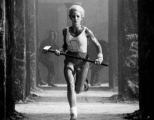

Macintosh Piyasaya Sürülüyor
Evrende Bir İz

“1984” Reklamı
Gerçek Sanatçılar Piyasaya Sürer
Ekim 1983’te Hawaii’de düzenlenen Apple satış konferansının doruk noktası, Jobs’ın “Flört Oyunu” adlı bir TV şovundan esinlenerek sahnelediği bir skeçti. Jobs sunucu rolünü oynadı, üç yarışmacısıysa Bill Gates ve başka iki yazılım yöneticisi, Mitch Kapor ve Fred Gibbons’tu. Şovun akılda kalıcı tema şarkısı çalarken üçü taburelerine oturup kendilerini tanıttılar. Lise ikinci sınıf öğrencisi gibi görünen Gates “Microsoft 1984’te gelirinin yarısını Macintosh için yazdığı yazılımlardan elde etmeyi planlıyor,” deyince alkışlar koptu. Sinekkaydı tıraş olmuş, yerinde duramayan Jobs sırıtarak ona Macintosh’un yeni işletim sisteminin, endüstrinin yeni standartlarından biri olacağını düşünüp düşünmediğini sordu. Gates şöyle yanıtladı: “Yeni bir standart yaratmak için biraz farklı değil, gerçekten yepyeni ve insanların hayal gücünü harekete geçiren bir şey üretmek gerekir. Ve Macintosh hayatımda gördüğüm, bu standarda uyan tek makine.”
Gates bunları söylese de Microsoft, Apple’ın işbirlikçisinden çok rakibi haline gelmekteydi. Apple için uygulama yazılımları (örneğin Microsoft Word) üretmeyi sürdürecekti, ama gelirinin giderek daha fazlasını IBM kişisel bilgisayar için yazdığı işletim sisteminden kazanacaktı. Geçen sene 279.000 Apple II satılmıştı, IBM PC ve klonlarıysa 240.000 adet satılmıştı. 1983 rakamlarıysa çok farklıydı: 420.000 Apple II’ye karşılık 1,3 milyon IBM ve klonları. Ayrıca Apple III ve Lisa tutmamıştı.
Tam Apple’ın satış ekibi Hawaii’ye gelirken, Business Week dergisi kapağında bu değişimden bahsetti. Başlık şuydu: “Kişisel Bilgisayarlar: Ve Kazanan... IBM:” Dergideki yazıda IBM PC’nin yükselişi ayrıntılarıyla anlatılıyordu. “Pazar üstünlüğü savaşı bitti bile,” diye ilan ediyordu dergi. “IBM son iki senede şaşırtıcı bir performans sergileyerek pazarın %26’dan fazlasını ele geçirdi ve 1985’e kadar dünya pazarının yarısını ele geçirmesi bekleniyor. Pazarın %25’i de IBM’le uyumlu makinelere ait olacak.”
Bu durum Ocak 1984’te, yani üç ay sonra piyasaya sürülecek olan Macintosh’un başarısını iyice gerekli kılmıştı. Jobs satış konferansında sonuna kadar mücadele etmeye karar verdi. Sahneye çıkıp IBM’in 1958’den beri yaptığı hataları anlattı ve şimdi de kişisel bilgisayar pazarını ele geçirmeye çalıştığını söyledi. “Büyük Mavi bütün bilgisayar endüstrisinin hâkimi mi olacak? Bütün enformasyon çağının? George Orwell 1984’i yazmakta haklı mıydı?” O anda tavandan bir ekran indi ve Macintosh’un altmış saniyelik televizyon reklamının (bir bilimkurgu filmini andırıyordu) ön izlemesi başladı. Bu reklam birkaç ay sonra tarihe geçecekti. Ama şimdilik Apple’ın demoralize olmuş satış ekibinin moralini yükseltmeye yaradı. Jobs kendini karanlığın güçleriyle savaşan bir asi olarak görmekle motive etmişti hep. Şimdiyse askerlerini de aynı şekilde motive edebiliyordu.
Bir engel daha vardı. Hertzfeld’le diğer sihirbazların Macintosh’un kodunu yazmayı bitirmeleri gerekiyordu. Makine 16 Ocak Pazartesi günü piyasaya sürülecekti. Bu tarihten bir hafta önce mühendisler işlerini zamanında bitiremeyeceklerini bildirdiler. Kodda bazı sorunlar vardı.
Jobs Manhattan’daki Grand Hyatt’taydı, basın ön izlemelerine hazırlanıyordu; bu yüzden Pazar sabahı telefonla toplantı yapılması kararlaştırıldı. Yazılım müdürü Jobs’a durumu sakince açıkladı, Hertzfeld’le diğerleriyse hoparlörlü telefonun etrafında toplanıp kaygıyla beklediler. Fazladan iki haftaya ihtiyaçları vardı sadece. Dağıtımcılara gönderilecek ilk mallarda yazılımın “demo” versiyonu bulunabilirdi ve ay sonunda yeni kod tamamlanır tamamlanmaz bunlar değiştirilebilirdi. Bir an sessizlik oldu. Jobs kızmadı. Tersine soğuk, ciddi bir sesle konuştu. Onlara gerçekten muhteşem olduklarını söyledi. Hatta öyle muhteşemdiler ki, Jobs bu işin altından kalkabileceklerini biliyordu. “Gecikmek yok!” dedi. Bandley binasının iş alanındakiler hep bir ağızdan hayret nidası attılar. “Bu işle aylardır uğraşıyorsunuz, iki hafta çok fark etmez. Halledin gitsin. Bir hafta sonra dağıtacağım makinelerde o kod olacak ve her makinede isminiz yazacak.”
“Eh, kodu bitirmek zorundayız,” dedi Steve Capps. Ve bitirdiler. Jobs’ın gerçekliği çarpıtma sahası onları imkânsız sandıkları bir şeyi başarmaya itti bir kez daha. Cuma günü Randy Wigginton dev bir torba dolusu çikolata kaplı espresso çekirdeği getirdi, sabahlayacakları son üç gece için. Jobs Pazartesi günü sabah 8:30’da işe gelince Hertzfeld’in kanepede neredeyse koma halinde yattığını gördü. Son bir küçük pürüzden bahsettiler birkaç dakika; Jobs bunun önemli olmadığını söyledi. Hertzfeld mavi Volkswagen Rabbit’ine (plakası: MACWIZ) güçlükle gitti ve yatmak için eve yollandı. Kısa süre sonra Apple’ın Fremont fabrikasından, üstünde renkli Macintosh çizimleri bulunan kutular çıkmaya başladı. Gerçek sanatçılar piyasaya sürer, demişti Jobs ve Macintosh ekibi bunu yapmıştı.
1984 Reklamı
Jobs 1983 baharında Macintosh’un piyasaya sürülmesini planlamaya başlarken, yarattıkları ürün kadar çığır acıcı ve şaşırtıcı bir reklam istedi. “İnsanların apışıp kalmalarına yol açacak bir şey istiyorum,” dedi. Bu görev Chiat/Day reklam ajansına verildi, çünkü bu ajans Regis McKenna’nın reklam şirketini satın almıştı. Projenin başına, ajansın Los Angeles’daki Venice Beach şubesinin yaratıcı yönetmeni olan sırık gibi, gür sakallı, dağınık saçlı, aptal aptal sırıtan, parlak gözlü, Lee Clow adlı bir plaj düşkünü getirilmişti. Clow deneyimli ve eğlenceliydi, rahat ama dikkatli çalışıyordu; Jobs’la otuz yıl sürecek bir arkadaşlık kurdu.
Clow ve ekibinden iki kişi –metin yazarı Steve Hayden ve sanat yönetmeni Brent Thomas– George Orwell’ın romanına gönderme yapan bir slogan bulmuşlardı: “1984 neden 1984 gibi olmayacak?” Jobs buna bayıldı ve onlara Macintosh’un piyasaya sürüleceği sırada reklamın hazır olmasını istediğini söyledi. Bunun üzerine bilimkurgu filmini andıracak, altmış saniyelik bir reklamın görsel senaryo taslağını hazırladılar. Taslakta asi bir genç kadın Orwellvari düşünce polisinden kaçıyordu ve Büyük Birader’in zihin kontrolüne yönelik konuştuğu bir ekrana balyoz fırlatıyordu.
Bu fikir kişisel bilgisayar devriminin ruhunu yansıtıyordu. Pek çok genç, özellikle de karşıkültürden olanlar bilgisayarları Orwellvari hükümetler ve dev şirketler tarafından bireyselliği yok etmekte kullanılabilecek araçlar olarak görmüşlerdi. Ama 1970’lerin sonlarına gelindiğinde bilgisayarlar artık kişisel özgürlük sağlayabilecek araçlar olarak da görülüyorlardı. Reklamda Macintosh bu ikinci davanın bir savaşçısı olarak gösteriliyordu – havalı, asi ve kahraman bir şirket, büyük şeytani şirketin dünyayı ele geçirme ve zihinleri tamamen kontrol etme planını engelleyebilecek tek şeydi.
Jobs bundan hoşlandı. Hatta reklamın konseptini kendine yakın buldu. Kendini bir asi olarak görüyordu ve Macintosh ekibine aldığı kılıksız hackerlerın ve korsanların değer yargılarını benimsemekten hoşlanıyordu. Binalarının tepesine korsan bayrağı asmışlardı. Jobs Apple şirketini kurmak için Oregon’daki elma komününden ayrılsa da, şirket kültüründen çok karşıkültüre ait biri olarak görülmek istiyordu hâlâ.
Ama hacker ruhundan giderek uzaklaştığının içten içe farkındaydı. Hatta onu döneklikle suçlayanlar bile çıkabilir. Wozniak Apple I’in tasarımını bedavaya paylaşmakla Homebrew etiğine sadık kalırken, kartları diğer üyelere parayla satmalarında direten Jobs olmuştu. Apple’ı bir şirkete dönüştürmek, halka açmak ve hisse senedi opsiyonlarını garajdayken yanlarında olan arkadaşlarına bedavaya dağıtmamak isteyen de oydu, Wozniak’ın gönülsüzlüğüne karşın. Şimdiyse Macintosh’u piyasaya sürmek üzereydi ve bunun hacker etiğinin birçok ilkesinin ihlali olduğunu biliyordu. Makine fazla pahalıydı. Jobs makinenin slotsuz olmasına karar vermişti, yani amatörler ona kendi genişletme kartlarını bağlayamayacak ve anakarta yeni işlevler ekleyemeyeceklerdi. Hatta bilgisayarı içine bakılamayacak şekilde tasarlamıştı. Sırf plastik kasayı açmak için bile özel aletler gerekiyordu. Macintosh kapalı ve kontrollü bir sistemdi, bir hackerdan çok Büyük Birader tarafından tasarlanmış gibiydi.
Yani “1984” reklamı Jobs’ın arzuladığı özimajı kendine ve dünyaya kabullendirmesinin bir yoluydu. Reklamdaki kadın kahraman kurulu düzeni yıkmaya soyunmuş bir asiydi ve üstündeki bembeyaz badiye Macintosh resmi çizilmişti. Yeni filmi Blade Runner’la büyük başarı kazanan Ridley Scott’ı yönetmen olarak tutan Jobs, kendisini ve Apple’ı dönemin siperpunk etiğini destekliyormuş gibi gösterebildi. Apple bu reklam sayesinde kendini farklı düşünen asilerle ve hackerlarla özdeşleştirebildi ve Jobs kendini onlarla özdeşleştirme hakkını geri kazanabildi.
Sculley görsel senaryo taslaklarını görünce başta beğenmedi, ama Jobs çığır açıcı bir şeye ihtiyaçları olduğunu söyledi ısrarla. Sırf reklam filminin çekimi için 750.000 dolar gibi eşi görülmemiş bir bütçe almayı başardı. Ridley Scott reklam filmini Londra’da çekti ve ekrandaki Büyük Birader’i büyülenmişçesine dinleyen kalabalıkta düzinelerce gerçek dazlağı kullandı. Kadın kahraman rolü bir kadın disk atıcıya verildi. Metalik gri tonların hâkim olduğu soğuk bir endüstriyel dekor kullanan Scott, Blade Runner’ın distopik atmosferini canlandırdı. Reklam filminde, tam ekrandaki Büyük Birader’in “Başaracağız!” dediği anda kadın kahramanın fırlattığı balyoz ekranı parçalıyor ve ekran ışık ve duman saçarak buharlaşıyor.
Jobbs reklamı Hawaii’de Apple satış ekibine izletince, reklama bayıldılar. Bunun üzerine reklamı yönetim kuruluna Aralık 1983’teki toplantıda izletmeye karar verdi. Yönetim kurulu odasının ışıkları tekrar yandığında herkes suskundu. Macy’s California’nın CEO’su Philip Schlein başını masaya koymuştu. Markkula sessizce bakakalmıştı ve başta reklamın gücünden etkilenmiş gibiydi. Sonra konuştu. “Yeni bir ajans bulmak isteyenler?” Sculley şöyle hatırlıyor: “Çoğu onun hayatlarında izledikleri en berbat reklam olduğunu düşündüler.”
Sculley kaygılandı. Chiat/Day’e satın aldıkları iki reklam süresini –biri 60, diğeri 30 saniyeydi– satmalarını söyledi. Jobs küplere bindi. Son iki yıldır Apple’a arada sırada uğrayan Wozniak bir akşam Macintosh binasına girdi. Jobs onu tutup “Gel de şuna bak,” dedi. Bir VCR çıkarıp reklamı izletti. “Hayretler içinde kaldım,” diye anımsıyor Woz. “Hayatımda izlediğim en inanılmaz şey olduğunu düşündüm.” Jobs yönetim kurulunun bu reklamı Super Bowl[13]’da oynatmamaya karar verdiklerini söyleyince Wozniak reklamı oynatmanın bedelini sordu. Jobs 800.000 dolar dedi. Wozniak her zamanki iyi kalpliliğiyle hemen “Eh, yarısını sen ver, yarısını da ben vereyim,” teklifinde bulundu.
Sonunda buna gerek kalmadı. Ajans 30 saniyelik reklam süresini sattı, ama uzun olanı satmayıp pasif direnişte bulundu. “Onlara 60 saniyelik süreyi satamadığımızı söyledik, ama aslında uğraşmamıştık,” diye anımsıyor Lee Clow. Sculley belki de yönetim kuruluyla veya Jobs’la arasının bozulmasını istemediğinden, ne yapılacağını pazarlama şefi Bill Campbell’ın belirlemesine karar verdi. Eski futbol koçu Campbell uzun bombayı atmaya karar verdi. “Bence denemeliyiz,” dedi ekibine.
18. Super Bowl’un üçüncü çeyreğinde, maçın hâkimi Raiders Redskin’e karşı sayı bulunca ülkenin dört bir yanındaki televizyon ekranları, pozisyonun tekrarını göstereceğine tam iki saniye boyunca ürkütücü bir şekilde karardı. Sonra marş adımlarıyla yürüyen robotlaşmış insanların tuhaf, siyah beyaz görüntüsü belirdi ve ürkünç bir müzik başladı. 96 milyondan fazla insan, daha önce gördükleri hiçbir reklama benzemeyen bir reklamı seyrettiler. Reklamın sonunda, robotlaşmış insanlar Büyük Birader’in buharlaşmasını dehşetle seyrederken, bir ses sakince konuştu: “24 Ocak’da Apple Computer Macintosh’u sunacak. Ve 1984’ün neden 1984 gibi olmayacağını göreceksiniz.”
Bu reklam fenomen oldu. O akşam üç şebekenin tamamı ve elli yerel istasyon haberlerinde reklamdan bahsederek, YouTube’un olmadığı o zamanda eşi görülmemiş bir şekilde tanınmasını sağladılar. Reklam sonunda Tv Guide ve Advertising Age tarafından tüm zamanların en iyi reklamı seçildi.
Şöhret Patlaması
Yıllar geçtikçe Steve Jobs ürün lansmanlarının büyük üstadı olacaktı. Macintosh vakasında, Ridley Scott’ın muhteşem reklamı başarı kazandıran unsurlardan sadece biriydi. Bir başka unsursa medyaydı. Jobs medyayı öyle iyi kullanmayı başarıyordu ki, uyandırdığı ilgi bir zincirleme reaksiyon gibi kendi kendini besleyerek büyüyordu. Bunu 1984’teki Macintosh’tan 2010’daki iPad’e dek, piyasaya ne zaman önemli bir ürün sürecek olsalar yapmayı başardı. Aynı numarayı bir sihirbaz gibi tekrarlayabiliyordu; muhabirler o numarayı birçok kez görmüş olsalar ve nasıl yapıldığını bilseler bile, yine de etkisine kapılıyorlardı. Bazı taktiklerini kibirli muhabirleri idare etmekte ve pohpohlamakta usta olan Regis McKenna’dan öğrenmişti. Ama Jobs muhabirleri heyecanlandırmayı, rekabet güdülerini manipüle etmeyi ve sadece onlarla röportaj yapması karşılığında olumlu yazılar yazmalarını sağlamayı içgüdüsel olarak biliyordu.
Aralık 1983’te haşarı mühendislik sihirbazlarını, Andy Hertzfeld’le Burrell Smith’i yanına alıp New York’a, Newsweek dergisine götürdü; dergide “Mac’i yaratan çocuklar” adlı bir yazı yayınlanacaktı. Macintosh’un tanıtımını yapmalarından sonra yukarı çıkarılıp, derginin yeni olan her şeye yoğun ilgi duyan efsanevi sahibi Katherine Graham’la tanıştırıldılar. Dergi Hertzfeld’le Smith’i, yanlarına bir teknoloji yazarıyla bir fotoğrafçı verip Palo Alto’ya gönderdi. Sonuçta dergide o ikisiyle ilgili, dört sayfalık hoş bir yazı çıktı; evde çekilmiş fotoğraflarında yeni çağın melekleri gibi görünüyorlardı. Yazıda Smith’in şimdi ne yapmak istediği konusundaki şu sözüne yer veriliyordu: “90’lı yılların bilgisayarını yaratmak istiyorum. Ama hemen yarın.” Yazıda Smith’in patronunun değişkenliğiyle karizmasından da bahsediliyordu. “Jobs’ın fikirlerini bağıra çağıra savunduğu oluyor ve savurduğu tehditler her zaman boş değil; söylentiye göre Jobs, bilgisayarlarında demode bulduğu imleç tuşlarının olmasında direten çalışanlarını işten kovmakla tehdit etmiş. Ama Jobs en iyi halindeyken ilginç bir karizma ve sabırsızlık karışımı sergileyebiliyor, bazen kurnazca ihtiyatlı davranırken bazen favori coşku ifadesini kullanıp ‘Manyak iyi,’ diyebiliyor.”
O sıralar Rolling Stone’da çalışan teknoloji yazarı Steven Levy, Jobs’la röportaj yapmaya geldi; Jobs derginin kapağına Macintosh ekibinin konmasında ısrar etmeye başladı hemen. “Jann Wenner’in kapağa Sting’in yerine bir grup bilgisayar uzmanını koyması ihtimali katrilyonda bir,” diye düşündü Levy ve haklıydı. Jobs, Levy’yi bir pizzacıya götürdü ve ısrarı sürdürdü: “Rolling Stone’un durumu sallantıda, berbat yazılar yayınlıyor, yeni konu ve yeni okuyucu sıkıntısı çekiyor. Mac onun kurtuluşu olabilir!” Levy ise aynı fikirde değildi. Rolling Stone’un aslında gayet iyi bir dergi olduğunu söyledi; Jobs son zamanlarda dergiyi okumuş muydu hiç? Jobs bir uçak yolculuğundayken dergideki MTV’yle ilgili bir yazıyı okuduğunu ve “boktan” bulduğunu söyledi. Levy o yazıyı kendisinin yazdığını söyledi. Jobs’ın hakkını teslim etmek gerekir, geri adım atmadı; ama hedef değiştirip Time’ı geçen seneki ağır eleştirileri yüzünden eleştirdi. Sonra Macintosh’tan felsefi bir şekilde bahsetmeye başladı. “Bizden önceki insanların kaydettiği gelişmelerden faydalanıyoruz ve yarattıkları şeyleri kullanıyoruz sürekli,” dedi. “İnsanoğlunun deneyim ve bilgi haznesine katkıda bulunarak borcumuzu ödemek muhteşem, harika bir his.”
Levy’nin yazısı kapak olmadı. Ama Jobs’ın ileride –NeXT’teyken, Pixar’dayken ve daha sonra Apple’a geri döndüğünde– yapacağı bütün büyük ürün tanıtımları Time’da, Newsweek’te ya da Business Week’te kapak olacaktı.
Lansman, 24 Ocak 1984
Andy Hertzfeld ekibiyle birlikte Macintosh’un yazılımını tamamladığı sabah bitkin halde evine gittiğinde yataktan en az bir gün çıkmamak niyetindeydi. Ama o günün ikindisinde, sadece altı saatlik uykudan sonra ofise geri döndü. Sorun çıkıp çıkmadığına bakmak istiyordu ve ekipten çoğu kişi de aynı sebeple gelmişti. Oturup sersemlemiş bir halde ama heyecanla beklerlerken Jobs içeri girdi. “Hey, kalkın yahu, daha işiniz bitmedi!” dedi. “Tanıtım için demo gerek!” Planı Macintosh’u kalabalık bir dinleyici topluluğunun karşısında, Chariots of Fire’ın coşkulu müziği eşliğinde sergileyip bazı özelliklerini göstermekti. “Provalara yetişmesi için hafta sonuna kadar hazır olması gerekiyor,” diye ekledi. Hertzfeld hep birlikte sızlandıklarını anımsıyor: “Ama konuşurken, etkileyici bir şey yaratmanın hoş olacağını fark ettik.”
Tanıtım Apple’ın 24 Ocak’ta –sekiz gün sonra– De Anza Devlet Üniversitesi’nin Flint oditoryumunda düzenlenecek yıllık hissedarlar toplantısıyla aynı gün yapılacaktı. Steve Jobs’ın yeni bir tüketim malının tanıtımını dünya tarihinde bir dönüm noktasıymış gibi gösterme stratejisinin üçüncü aşamasıydı bu –televizyon reklamından ve basın organlarında çıkan sansasyonel yazılardan sonra–: Ürün sadık hayranlardan ve heyecan dalgasına ister istemez kapılan muhabirlerden oluşma bir dinleyici topluluğuna gösterişli bir şekilde sergilenecekti.
Hertzfeld bilgisayarın Chariots of Fire’ı çalmasını sağlayacak bir müzik çaları iki günde yazmayı takdire şayan bir şekilde başardı. Ama Jobs şarkıyı bilgisayardan dinleyince sesi beğenmedi, bu yüzden kayıt kullanmaya karar verdiler. Jobs yazıyı konuşmaya dönüştüren, hoş bir elektronik aksanı olan bir konuşma üretecine bayıldı ve demoya katmaya karar verdi. “Macintosh’un kendini tanıtan ilk bilgisayar olmasını istiyorum!” dedi ısrarla. 1984 reklamının yazarı Steve Hayden senaryoyu yazması için kiralandı. Steve Capps büyük fontlu Macintosh sözcüğünün ekrandan kayarak geçmesini sağlamanın yolunu buldu, Susan Kare ise bir açılış grafiği hazırladı.
Bir gece önceki provada bunların hiçbiri düzgün çalışmadı. Jobs animasyonun ekrandan geçme tarzından nefret etti ve değişiklikler emredip durdu. Sahne ışıklandırmasını da beğenmedi ve Sculley’yi oditoryumdaki çeşitli koltuklara oturtup, yapılan değişiklikler konusunda fikrini aldı. Sahne ışıklandırması varyasyonları konusuna pek kafa yormamış olan Sculley, hangi merceğin harfleri daha iyi gösterdiğini soran göz doktoruna yanıt veren bir hasta gibi kararsız konuştu. Provalar ve değişiklikler gecenin geç saatlerine kadar, beş saat boyunca sürdü. “Gösteriyi sabaha yetiştirmemiz imkânsız diye düşündüm,” diyor Sculley.
Jobs en çok sunumuna kafayı takmıştı. “Slaytları fırlatıyordu,” diye anımsıyor Sculley. “Milleti deli ediyordu, sunumdaki en ufak aksaklıklar yüzünden bile sahne görevlilerine bağırıp çağırıyordu.” İyi bir yazar olduğunu düşünen Sculley, Jobs’ın senaryosunda değişiklikler yapılmasını önerdi. Jobs biraz sinirlendiğini anımsıyor, ama ilişkilerinin Sculley’yi pohpohladığı ve egosunu okşadığı bir dönemindeydiler hâlâ. “Bence sen tıpkı Woz’la Markkula gibisin,” dedi Sculley’ye. “Şirketin kurucularından sayılırsın. Onlar şirketi kurdular, ama biz geleceği kuruyoruz.” Sculley, Jobs’ın bu sözlerini yıllar sonra anlatacaktı.
2600 koltuklu Flint Center oditoryumu ertesi sabah hıncahınç doldu. Jobs geldiğinde üstünde çift yakalı bir mavi blazer, kolalanmış bir beyaz gömlek ve uçuk yeşil bir papyon vardı. “Hayatımın en önemli anı bu,” dedi Sculley’ye, programın başlamasını sahne arkasında beklerlerken. “Gerçekten çok heyecanlıyım. Bunu bilen tek insan sensin herhalde.” Sculley onun elini bir an sımsıkı tuttu ve fısıldayarak iyi şans diledi.
Yönetim kurulu başkanı olarak Jobs sahneye ilk çıkan kişi oldu, hissedarlar toplantısını resmen başlatmak için. Bunu kendine özgü bir duayla yaptı. “Toplantıyı,” dedi “Dylan’ın – yani Bob Dylan’ın 20 yıllık bir şiiriyle başlatmak istiyorum.” Hafifçe gülümsedikten sonra başını eğip, “The Times They Are A-Changin’”in ikinci bölümünü okumaya başladı. On dizeyi tiz sesiyle bir çırpıda okudu ve “...Çünkü şimdi kaybeden / İleride kazanacak / Çünkü zaman değişiyor,” kısmıyla bitirdi. Bu şarkı, multimilyoner yönetim kurulu başkanının karşıkültür öz imajıyla bağlantısını koparmamasını sağlayan ilahi haline geldi. Jobs’ın favori versiyonu, Dylan’ın 1964 Cadılar Bayramı’nda Lincoln Center Filarmoni Salonu’nda Joan Baez’le birlikte sergilediği canlı performanstı ve Jobs’ta bu konserin bir korsan kaydının kopyası vardı.
Sculley sahneye çıkıp şirketin kazançlarından bahsetmeye başladı ve lafı uzattıkça seyirciyi sıktı. Sonunda konuşmasını kişisel sözlerle noktaladı. “Apple’da geçirdiğim son dokuz ayda başıma gelen en önemli şey, Steve Jobs’la arkadaş olma şansını elde etmemdi,” dedi. “Kurduğumuz dostluk benim için çok önemli.”
Işıklar loşlaşırken Jobs tekrar sahneye çıktı ve Hawaii satış konferansında attığı savaş çığlığının dramatik bir versiyonuna girişti. “1958’de,” diye söze başladı. “IBM kserografi adlı bir teknoloji geliştiren yeni bir şirketi satın alma fırsatını es geçti. İki yıl sonra Xerox doğdu ve IBM’dekiler o zamandan beri kafalarını duvarlara vuruyor.” Kalabalıktakiler güldüler. Hertzfeld bu konuşmanın çeşitli versiyonlarını Hawaii’de ve başka yerlerde dinlemiş olsa da Jobs’ın bu seferki tutkusundan etkilendi. Jobs IBM’in başka hatalarından da bahsedip şimdiki zamana gelirken giderek hızlandı ve duygusallaştı:
Şimdi 1984’teyiz. Görünüşe göre IBM her şeyi istiyor. Apple IBM’le boy ölçüşebilecek tek rakip, tek umut olarak görülüyor. Başta IBM’e kucak açan satıcılar artık geleceğin IBM’in egemenliğinde ve kontrolünde olmasından korkuyorlar ve Apple’ı gelecekteki güvenliklerini garantileyebilecek tek güç olarak görüyorlar. IBM her şeyi istiyor ve silahlarını endüstriyi kontrolüne almasının önündeki son engel olan Apple’a çevirdi. Büyük Mavi bütün bilgisayar endüstrisinin hâkimi mi olacak? Bütün enformasyon çağının? George Orwell haklı mıydı?
Konuşmasının doruğuna yaklaştıkça seyirciler önce mırıldanmaya, sonra alkışlamaya ve nihayet kendilerinden geçerek tezahürat yapmaya başlamışlardı. Ama Orwell sorusunu yanıtlamalarına fırsat kalmadan oditoryum karardı ve ekranda 1984 reklamı belirdi. Reklam bitince bütün seyirciler ayakta alkışladılar.
Dramatik davranmakta yetenekli olan Jobs karanlık sahnede yürüyüp, üstünde bir bez çanta duran küçük bir masaya gitti. “Şimdi sizlere Macintosh’u takdim etmek istiyorum,” dedi. “Büyük ekranda görmek üzere olduğunuz bütün görüntüler, bu küçük çantanın içindeki şey tarafından üretilecek.” Bilgisayarı, klavyeyi ve fareyi çıkarıp ustaca birleştirdi ve sonra gömlek cebinden yeni 3½ inçlik disketlerden birini çıkarınca yine alkışlar koptu. Chariots of Fire’ın tema şarkısı çalmaya başladı ve Macintosh ekranı yukarıdaki dev ekranda gösterildi. Jobs bir iki saniyeliğine nefesini tuttu, çünkü dün gece demoda sorunlar çıkmıştı. Ama bu sefer sorun çıkmadı. MACINTOSH sözcüğü ekrandan yanlamasına geçti; sonra altında “Manyak iyi” sözcükleri yavaş yavaş, el yazısıyla belirdi. Böyle güzel grafiksel gösterimlere alışkın olmayan seyirciler bir an sus pus oldular. Birkaç hayret nidası duyuldu. Sonra bir dizi ekran görüntüsü belirdi peş peşe: Bill Atkinson’ın QuickDraw grafik paketi ve ardından çeşitli fontlar, dokümanlar, belgeler, çizimler, bir satranç oyunu, bir hesap tablosu ve Steve Jobs’ın resmi (başının yanındaki düşünce balonunda bir Macintosh vardı).
Gösterim bitince Jobs gülümsedi ve bir sürpriz yaptı. “Son zamanlarda Macintosh’tan epey bahsettik,” dedi. “Ama ilk kez bugün Macintosh’un bizzat konuşmasına izin vermek istiyorum.” Bilgisayarın yanına geri dönüp farenin düğmesine basınca Macintosh biraz titrek ama sevimli, kalın bir elektronik sesle konuşmaya başladı ve kendini tanıtan ilk bilgisayar oldu. “Merhaba. Ben Macintosh. O çantadan çıkmak cidden harika,” diye söze başladı. Yapmayı bilmediği tek şey, çılgınca tezahürat yapan ve çığlıklar atan kalabalığın yatışmasını beklemekti sanki. Bir an duraksayıp bu anın tadını çıkarmak yerine konuşmayı sürdürdü. “Kalabalıkların önünde konuşmaya alışık olmasam da, bir IBM anaçatıyı ilk görüşümde aklımdan geçen düşünceyi sizlerle paylaşmak istiyorum. Kaldıramayacağınız bilgisayarlara asla güvenmeyin.” Kalabalığın gürültüsü son sözünü yine neredeyse bastırdı. “Konuşabildiğim belli. Ama şimdi arkama yaslanıp dinlemek istiyorum. O yüzden sizlere, bana babalık etmiş adamı, Steve Jobs’ı büyük bir gururla takdim ediyorum.”
Kalabalık deliye döndü; insanlar kendilerinden geçmişlerdi, tepiniyor ve yumruklarını sallıyorlardı. Ağzını açmadan ama genişçe yayarak gülümseyen Jobs yavaşça kafa salladı ve sonra başını eğip konuşmaya başladı. Alkış yağmuru neredeyse beş dakika sürdü.
O günün ikindisinde, Macintosh ekibinin Bandley 3’e geri dönmesinden sonra otoparka bir kamyon girdi ve Jobs bütün ekibi kamyonun yanında topladı. Kamyonun içinde yüz tane gıcır gıcır Macintosh bilgisayar vardı; her biri ekip üyelerinden birinin ismi yazılı birer plakaya sahipti. “Steve onları ekip üyelerine birer birer, ellerini sıkarak ve gülümseyerek dağıtırken biz hep birlikte alkışlıyorduk,” diye anımsıyor Hertzfeld. Zor bir yolculuk olmuştu ve Jobs’ın itici ve bazen zalimce yönetim tarzı birçok kişinin egosunu incitmişti. Ama Macintosh’u yaratmayı ne Raskin, ne Wozniak, ne Sculley, ne de şirketteki başka herhangi biri başarabilirdi. Bunu odak grupları ve tasarım komiteleri de başaramazlardı muhtemelen. Jobs’ın Macintosh’u çantadan çıkardığı gün, bir Popular Science muhabiri ona nasıl bir pazar araştırması yaptığını sordu. Jobs onu tersledi: “Alexander Graham Bell telefonu icat etmeden önce pazar araştırması mı yapmıştı?”